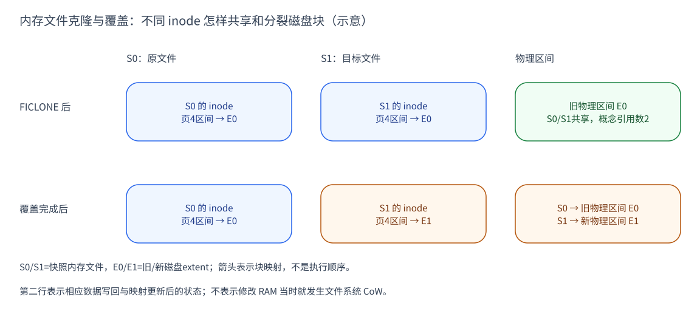

CubeSandbox 的 XFS 内存卷：reflink 如何共享磁盘块
CubeSandbox 的内存卷把 VM 的 RAM 字节保存为存储对象。在 XFS backend 中， 这个对象由普通文件承载：VMM 决定保存哪些字节，cubecow 组织文件与克隆， XFS 管理底层磁盘块。三层配合，才让“产物内容完整”和“本次只写部分页”同时成立。
本文先解释内存镜像的逻辑内容、物理分配与对象生命周期，再走一遍克隆和 覆盖流程。假设模板内存文件大小为 2 GiB，只用其中一个区间演算；容量不是 实测配置。XFS 数据结构的完整介绍见 XFS 基础机制。
在本文图里，S0/S1专指原快照和新快照的内存文件，VM的其他保存状态不画。 A是正在运行、准备被保存的Sandbox；E0是某个文件区间原先引用的磁盘extent， E1是该区间覆盖后使用的新extent。E0/E1不是内存页号、快照ID或实际块地址。
| 版本 | 固定源码 | 大致时间（commit） |
|---|---|---|
| v0.5.1 | a164417f4972 | 2026-07 |
| v0.6.0 | 8721dd151971 | 2026-07 |
| v0.7.1（主要讲解基线） | 31d911e430fd | 2026-09 |
日期采用 commit 月份，不是发布日期。本文核对这三个版本的相关实现，未做运行实验。
XFS 内核机制以 Linux v6.6 固定源码 作辅助基准；实际宿主内核、文件系统参数和持久性未运行验证。
1. 内存卷模型：业务对象、文件内容与磁盘块
内存快照并不把客户机的“物理地址”原样变成磁盘地址。VMM 按保存布局，把 RAM 范围写到内存镜像的文件偏移；存储层再把文件偏移映射到实际块。恢复时， VMM 可把快照文件作为 RAM backing 映射。文件和运行中 RAM 是两个阶段的载体， 不是同一种设备。E1、E3、E6
在这条链上，可以分别观察三种对象：
| 层次 | 管理的对象 | 负责的动作 |
|---|---|---|
| Cubelet / cubecow | 内存 volume、snapshot 名称与来源 | 选择基线、创建目标、解析和回收对象 |
| VMM | RAM 范围、保存布局与目标文件偏移 | 识别选页，把当前字节写到正确位置 |
| XFS | inode、extent 与共享引用 | 承载文件内容，克隆映射并隔离后续写入 |
一个上层对象操作可能涉及多个文件系统动作。创建目标文件不等于 VM 状态已 保存，写完内存字节也不等于目录、catalog 和整份快照已经持久化。后面的代码 流程应按这些完成边界阅读，而不能只看一个对象名字。
memory volume 在 XFS backend 中由普通文件承载
在 CubeSandbox 的 XFS backend 中，cubecow 的 reflink engine 把 volume 与 snapshot 表示为普通宿主文件，返回的 DevPath 就是文件路径，activation 无需再生成一块 dm-thin 设备。业务对象叫 volume，不能据此把它理解成 客户机挂载的磁盘或每个 Sandbox 都独占的一块物理盘。E1
新建内存目标会用 set_len 设置逻辑长度；它不是逐字节写入 2 GiB 的操作。
Linux 文件的空洞读作零，不等于所有逻辑字节都已分配物理块。若目标没有
已有 base，只写变化页就会丢掉未写部分的真实值；这也是增量路径要先克隆
完整基线，而 Full 可以从新建目标开始的原因。
S0、S1 是不同文件和不同 inode，内容分别有自己的版本。inode 是文件的元数据 与数据映射身份，pathname 则是访问它的名字。Snapshot 这个名称 不是 XFS 的整文件系统快照，也不自动让普通文件不可修改；作为 VM 恢复 基线使用时，仍要由对象管理与调用路径维持它的稳定性。
2. 保存原理：完整内容由基线与覆盖共同构成
全量保存从本次 RAM 提供所有选定范围的字节；增量保存则把来源拆成两部分。 未被覆盖的文件区间沿用基线内容，被选中的区间用运行实例的当前字节替换。 这是内容层面的组合规则，不要求两部分各自占据独立磁盘空间。E3
reflink 正好把这条规则落到文件层：先让目标具备基线的完整逻辑内容，同时 共享已有磁盘块；再由 VMM 覆盖选中区间。因而 S1 的“完整”是指单独读取它 能得到完整镜像，不是说每个字节都已经拥有独占的物理副本。E4
逻辑长度、分配空间与持久性分别判断
XFS 用 extent 描述一段文件逻辑位置对应哪些连续物理块，不必为每个文件字节 单独记映射。Allocation Group 把分配与元数据组织在不同组内，配合树结构 管理空间。本文关注的特性是 reflink 共享 extent、稀疏文件和写时分裂。E2
支持 reflink 的 XFS 还维护共享块的引用计数信息。两个 inode 可以把各自 某个逻辑区间指向同一批已写磁盘块。它们不是两个名字指向同一个 inode 的 hardlink：修改克隆文件的内容必须能与源文件隔离。
例如两个 2 GiB 文件可以共享大部分已分配数据块，稀疏区间也可能没有物理块。 因此，文件长度不能直接相加作为物理占用；反过来，共享很多块也不会使目标 文件缺少逻辑内容。真正分配了多少空间，还要看布局、写入和文件系统状态。
XFS 使用日志管理元数据事务，并有 delayed allocation，把部分物理分配 推迟到写回阶段。这些特性影响分配和恢复语义，但不能直接推出本机速度、 崩溃后 VM 快照一定完整，或每次写一页只多占一个同样大小的 extent。E2
3. 准备阶段：从基线克隆完整目标文件
v0.7.1 的 Commit 选出 base 后，XfsCow 的 CommitTemplateMemory 调用
cubecow 创建 snapshot。engine 打开源文件，创建一个新目标文件，再对目标
FD 发出 ioctl(FICLONE, source_fd)；失败就返回错误并清理目标。
这个操作建立文件数据映射，不识别 guest 的脏页。E3
把调用拆开看：CommitTemplateMemory先确定新内存对象名字，
create_snapshot_from_volume解析源文件并预留目标名字，ficlone用
create_new打开目标，最后执行 ioctl(dst_fd, FICLONE, src_fd)。
成功返回文件路径后，VMM才拿这个目标继续写选中页。
Linux 将 FICLONE 请求交给 VFS 的 clone 接口，最终进入 XFS remap 路径。 XFS 为目标逻辑区间建立指向源 extent 的映射，并更新共享引用计数；目标 因此能读到完整源内容，而不要求先把所有数据块重新写一遍。E4
看图的第一行：S0 与 S1 的示意区间都指向 E0，读到同一个“旧”值。图只画 一个区间；真实文件中还可以有其他 extent 和空洞，各文件自己的 inode、 大小与元数据仍各自存在。

图 1：示意，非实际块映射或容量测量。“引用数2”是两个文件共享的概念计数， 不是完整 refcount B+tree 的原始条目展示。证据：E3、E4。 每列固定一种对象，第二行表示覆盖完成后的状态；“文件→E0/E1”表示块映射， 不是执行顺序。绿色强调共享旧区间，橙色强调目标的新区间，原文件那一列不变。
4. 保存阶段：VMM 写字节，XFS 分离共享块
运行时 RAM CoW 与文件系统 CoW 在这里先后出现。A 修改私有内存时，宿主处理 RAM 页的隔离；A 保存时，VMM 才把相应字节写到 S1；这次文件写入又可能让 XFS 分离共享块。两次 CoW 的对象、触发时机和分配单位都不同。
VMM 现在将 A 的选中页写进 S1 文件的相应偏移。若这些偏移仍映射共享块， XFS 需要为新内容准备独立存储，而 S0 保留旧内容。这才是文件系统层的 CoW； A 早先写自己的 MAP_PRIVATE RAM 时，并没有立刻写这些磁盘块。
具体桥接在 send_pagemap_anon_memory 或 send_soft_dirty_memory：它们先
得到选中GPA范围，再用原RAM范围表换算文件偏移，最后交给
save_range_to_file循环写出。XFS看到的是目标文件某个字节区间被写，
并不知道这个区间在guest里叫“页4”。E3
XFS 的写路径可先做 CoW 空间预留/延迟分配，使用独立 CoW fork 暂存映射，
等对应数据写入完成再把新映射移入文件的 data fork，并调整旧引用。
“fork”在这里是 inode 内的映射结构，不是创建进程的 fork()。E5
看图的第二行：S1 的该区间改指 E1，“新”值只属于它；S0 继续指 E0。 其他没有覆盖的区间仍可共享。实际分裂和写回按文件系统块、extent、缓存及 对齐规则处理，不能拿一次选中 4 KiB RAM 页直接换算磁盘增长量。
5. 应用原理：内容独立，不等于生命周期没有依赖
现在可以回答两个看似矛盾的问题：S1 的内容来自 S0，为什么恢复时不必回放 S0？既然内容独立，为什么又不能随意删除来源目录？前者由文件映射解释， 后者取决于业务对象组织和运行中的引用，不能用同一层规则回答。
FICLONE 后，每个文件持有自己的映射。S2 可以从 S1 克隆，仍是独立可读取的 完整文件；S2 不是“要先打开 S0、再重放 S1 差分”的链。共享块的引用决定其 何时可回收，删除一个文件不会要求把其余文件都完整重拷贝。E4
但物理引用与 CubeSandbox 的业务血缘是两件事。reflink engine 会把来自 snapshot 的新 snapshot 放到 ultimate-origin 的目录组织下；删除、命名索引、 打开中的 FD 和 catalog/基线绑定仍有对象管理规则。文件内容自包含不表示 可以任意删除整个来源目录，也不表示运行中 VM 不再需要其打开的恢复文件。E1
v0.7.1 的 XFS restore 可直接打开原 snapshot 文件并 MAP_PRIVATE，而 S3 有自己的导入/私有卷流程。因此“每启动一个 Sandbox 都先 reflink 一份内存 volume”并不是这条 XFS 路径的必要步骤。共享 RAM 如何分裂见配套恢复文章。
v0.7.1 的 delete_volume 只 unlink origin 主文件，有 snapshot 时保留目录；
delete_snapshot 删除最后一个 sibling 后，只有 origin 已不存在才回收空目录。
目录项消失与运行中映射/FD 引用消失不是同一个时点；不能据此认为内存数据
已经不用保留，或把对象删除直接写成“整个 origin 目录清空”。E6
6. 适用条件、版本范围与验证边界
reflink 让“完整内存内容”和“少写变化页”可以同时成立：逻辑文件仍完整， 只有修改区间逐渐失去物理共享。创建克隆仍有元数据工作，后续写入仍可能 需要新空间；共享程度、暂停耗时和实际磁盘占用取决于负载与文件系统状态。
文件必须处在可克隆的文件系统边界内，XFS 本身还要有 reflink 特性；backend 会做 FICLONE 支持探测，不能只看文件系统名字。这里的克隆失败并没有自动 退成普通全量文件复制。日志型元数据也不等于整份 VM 数据已持久落盘； 源码中部分克隆后的目录 fsync 错误被忽略，不能宣称已验证掉电安全。E3
v0.5.1/v0.6.0/v0.7.1 的底层 FICLONE helper 保持一致，v0.7.1 上层变为 backend 分派与 XfsCow 命名，S3 的存储规则另计。本文未验证容量、删除/崩溃恢复、不同 块大小、跨文件系统或实际 reflink 参数。2 GiB 和 E0/E1 都是讲解用例。
继续阅读：脏页识别与窗口管理、 内存恢复与运行时 CoW、 SoftDirty 演进。 想继续理解字段与内核步骤，见 XFS基础：extent、reflink、FICLONE。
源码证据
E1 · 文件型 volume/snapshot（local fact）
v0.7.1
E2 · XFS 元数据/日志（Linux v6.6 固定辅助源码）
E3 · 克隆调用与边界（local fact，三版独立核对）
v0.7.1
VMM 选页与目标文件覆盖
FICLONE helper
克隆后的部分目录 fsync 结果被忽略见 E1 的 :723–724、:817–819。
E4 · FICLONE 到共享映射（Linux v6.6 固定辅助源码；E0/E1 为 inference）
- ioctl_file_clone
- FICLONE 全文件请求入口
- VFS 同文件系统检查与 remap 分派
- XFS 检查 reflink 与 remap
- 增引用与建立目标 extent 映射
- FICLONE 接口说明作同文件系统等接口前提参考。
E5 · 写回后的 CoW 映射替换（Linux v6.6 固定辅助源码）
此系统层机制与 Sandbox MAP_PRIVATE 匿名页的分裂不同，也不证明 VM 全快照的崩溃一致性。
E6 · 删除与运行引用（local fact）
v0.7.1